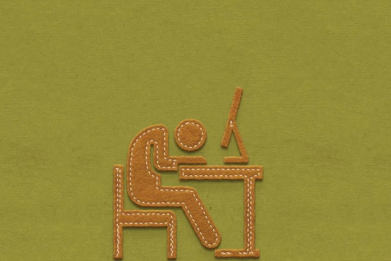
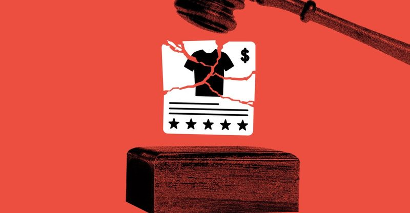
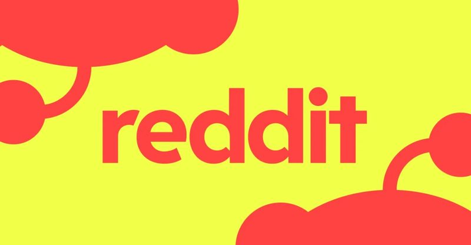
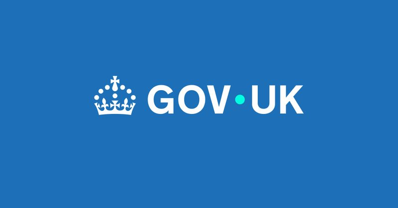
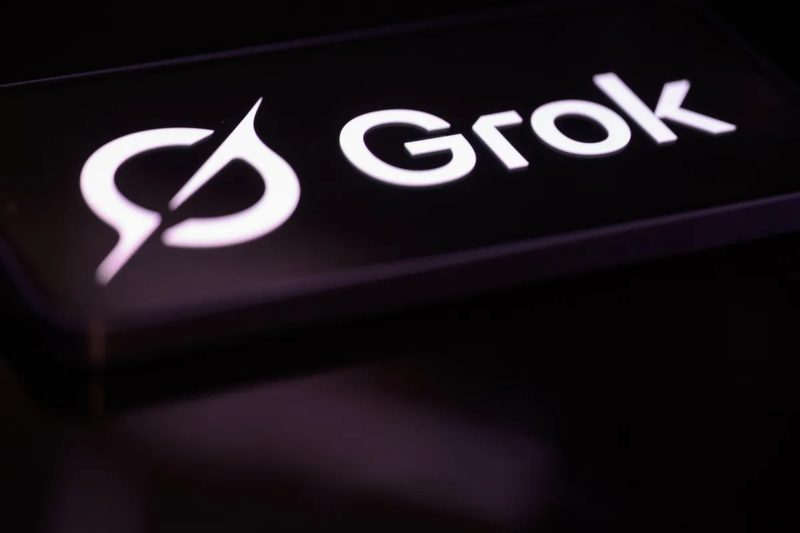
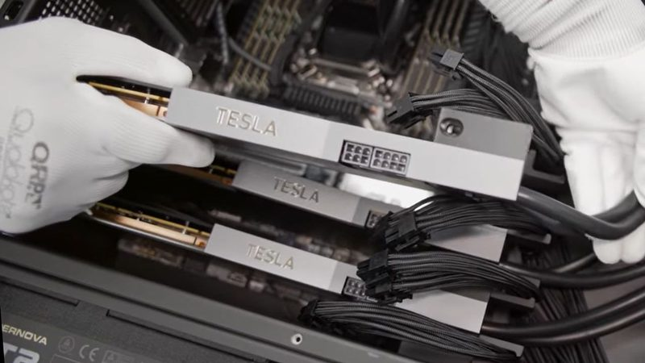

今日頭條
Apollo 經濟學家：AI 對科技業以外的企業「零獲利」 PLUS：賓州立法：AI 生成或大幅修改的廣告必須標示
週末新聞較少：華爾街開始質疑 AI 到底幫一般企業賺了多少錢，美國有州要求 AI 廣告標示，大型開源社群禁止 AI 專案，英國聯手 OpenAI 和 Anthropic 成立 AI 生物安全實驗室。
📋 今天 6 則 Apollo 經濟學家：AI 在科技業以外幾乎沒帶來獲利 賓州新法：AI 生成或大幅修改的廣告要標示 Reddit 開源社群 r/opensource 全面禁止 AI 相關專案 英國成立 AI 生物安全實驗室，OpenAI、Anthropic 出資 Grok 的 AI 電影只先交出 7 分鐘 黃仁勳：AI 代理軟體每顆 GPU 每年可能收 2,000 美元 
圖：TechCrunch / Getty Images 資金 #1 Apollo 經濟學家：AI 在科技業以外幾乎沒帶來獲利 Apollo 首席經濟學家 Torsten Slok 分析「S&P 493」，也就是標普 500 扣掉 Alphabet、Amazon、Apple、Meta、微軟、Nvidia 和 Tesla 七家後的公司。他發現這些企業的利潤率和每位員工營收都沒有明顯提升，形容是「對科技業以外的美國企業零財務回報」。他的看法是：「AI 或許是很棒的計算機，但在商業上，智慧大多是判斷力。」
💡 跟你有什麼關係： AI 投資熱潮的前提是企業會因此賺更多錢。如果多數公司遲遲看不到成效，可能影響 AI 相關股票和企業的導入意願，也提醒個人別只因為「有用 AI」就高估一家公司的獲利。
⚠️ 這是單一經濟學家用財報數據做的觀察，不代表 AI 對個別公司或員工沒有幫助。
📰 原始來源：TechCrunch（2026-10-25） ↗ 
圖：Cath Virginia / The Verge, Getty Images 政策 #2 賓州新法：AI 生成或大幅修改的廣告要標示 賓州州長 Josh Shapiro 週四簽署《AI 欺騙性廣告法》。只要廣告「大幅修改或由 AI 生成」，就必須用和廣告相同的形式標示，例如影片廣告要在影片裡標示；不論廣告在哪裡製作，只要在賓州播出就適用。賓州是美國最早這樣立法的州之一，法案由州參議員 Nick Pisciottano 提出。
💡 跟你有什麼關係： AI 做的假代言、假產品照越來越難分辨。強制標示讓消費者至少知道眼前的畫面不是實拍，其他地區也可能跟進類似規定。
⚠️ 漏洞也不少：「大幅修改」的認定很主觀，而且諷刺、模仿和「明顯虛構」的內容不受限制。
📰 原始來源：The Verge（2026-10-24） ↗ 
圖：The Verge 新聞 #3 Reddit 開源社群 r/opensource 全面禁止 AI 相關專案 r/opensource 的新規則禁止使用 AI、由 AI 製作或為 AI 打造的專案，貼文的專案還必須至少一年、持續維護且有多位貢獻者。管理員表示無法分辨「AI 寫的」和「AI 翻譯的」文字，等於讓不會英文的人也很難發文。規則引發反彈，有人另開 r/trueopensource，也有人指出 Linux 核心早已有 AI 生成的程式碼。
💡 跟你有什麼關係： 這反映開源社群對 AI 灌水內容的疲勞。之後在論壇或社群發文，用 AI 潤稿或翻譯也可能被當成違規，發文前最好先看清楚版規。
⚠️ 管理員 Wolvereness 表示會選擇性執行，例如字幕這類無障礙功能可以例外。
📰 原始來源：The Verge（2026-10-25） ↗ 
圖：GOV.UK 政策 #4 英國成立 AI 生物安全實驗室，OpenAI、Anthropic 出資 英國政府 10 月 24 日宣布成立 AI Biosecurity Lab（AIBL），政府出資 1 億英鎊，OpenAI 和 Anthropic 承諾最多再投入 2 億英鎊，合計最多 3 億英鎊。官方稱這是全球第一個專門處理 AI 生物安全的機構，目標是用 AI 更早偵測生物威脅，並加快疫苗和治療方法的開發。
💡 跟你有什麼關係： 越強的 AI 可能降低製造生物武器的門檻，也可能加快新藥研發。由政府和 AI 公司一起建立防線，是各國處理這類風險的新做法。
📰 原始來源：GOV.UK（2026-10-24） ↗ 
圖：TechCrunch / Getty Images 新上線 #5 Grok 的 AI 電影只先交出 7 分鐘 馬斯克三個月前說要用 AI 做一部「符合史實」的長片《奧德賽》，Grok 現在只發布了前 7 分鐘，並改稱是「奧德賽系列第一集」。影片和 Wonder Studios、導演 Dev Walker 合作製作。同名題材的諾蘭電影《奧德賽》7 月上映，在六個國家實景拍攝，票房很好。
💡 跟你有什麼關係： AI 影片工具進步很快，但要做成長篇、劇情連貫的作品仍有難度。這次從長片縮成短集，可以看出目前 AI 影片的實際能力。
📰 原始來源：TechCrunch（2026-10-25） ↗ 
圖：Tom's Hardware 觀點 #6 黃仁勳：AI 代理軟體每顆 GPU 每年可能收 2,000 美元 Nvidia 執行長黃仁勳在 GTC 柏林大會上表示，執行「AI 工廠」上 AI 代理所需的整套 Nvidia 軟體，授權費大約是每顆 GPU 每年 2,000 美元。這只是舉例的數字，Nvidia 沒有說明包含哪些軟體、授權條件和開始時間；它現有的 AI Enterprise 訂閱定價是每顆 GPU 每年 4,500 美元。
💡 跟你有什麼關係： Nvidia 想從賣晶片延伸到收軟體年費。如果成真，雲端和 AI 服務的成本可能再墊高，最後也可能反映在消費者付的訂閱費上。
⚠️ 兩個數字涵蓋的範圍可能不同，不能直接比較。
📰 原始來源：Tom's Hardware（2026-10-25） ↗ ✅ 今天可以做： 看到很逼真的廣告照片或影片時，先找有沒有「AI 生成」標示，再到官網或其他來源確認產品和代言是不是真的。
🗂️ 過去 14 天